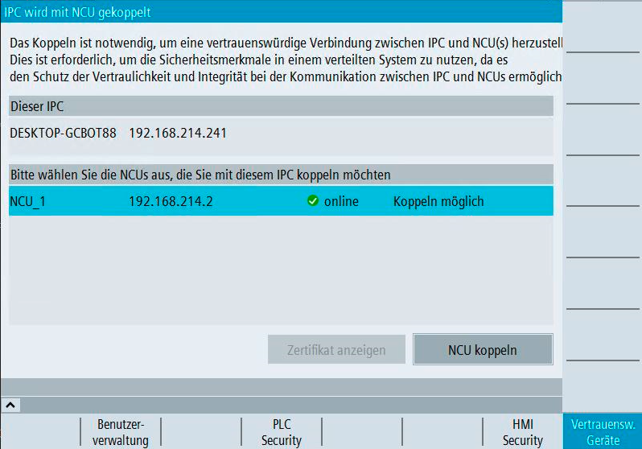

Das Koppeln ist notwendig, um eine vertrauenswürdige Verbindung zwischen einem IPC und einer NCU oder mehrerer NCUs herzustellen. Dies ist notwendig, um Sicherheitsfunktionen in einem verteilten System zu verwenden, da es den Schutz der Vertraulichkeit und Integrität in der Kommunikation zwischen IPC und NCU ermöglicht. Ein simpler Austausch des IPCs und somit der Missbrauch von Daten der NCU wird damit verhindert.
Es kann immer nur ein IPC mit einer (1:1) oder mehrerer NCU(s) (1:N) eine Vertrauensbeziehung eingehen.
| Hinweis |
Koppeln nur bei IPC-SystemenDas Koppeln muss nur durchgeführt werden, wenn ein IPC bei ihrem SINUMERIK System verbaut ist. |
| Achtung |
Funktionseinschränkungen ohne KoppelnWenn Sie in einem verteilten System aus IPC und NCU vorab keine Vertrauensbeziehung zwischen beiden Komponenten herstellen, müssen Sie mit folgenden Funktionseinschränkungen rechnen:
Koppeln Sie deswegen immer vorab den IPC mit der vertrauenswürdigen NCU, um diese SINUMERIK Security-Funktionen nutzen zu können. |
| Hinweis |
Nur eine Instanz von SINUMERIK OperateIn einem verteilten System mit IPC und NCU ist nur eine Instanz von SINUMERIK Operate erlaubt.
|
Mit aktiver Benutzerverwaltung: Sie verfügen über die Rolle "Security Admin" oder die Zugriffsstufe 2 (Service).
ODER
Ohne aktive Benutzerverwaltung: Sie verfügen mindestens über die Zugriffsstufe 3 (Anwender).
SINUMERIK Operate auf dem IPC muss bereits eine Verbindung zu der zu koppelnden NCU oder den zu koppelnden NCUs haben.
Wenn Sie eine NCU mit dem IPC koppeln möchten, können Sie die NCU über SINUMERIK Operate konfigurieren:
Im Bedienbereich "Inbetriebnahme" wählen Sie die Softkeys "HMI > vertikale Fortschaltleiste > NCU Verbindung" und geben Sie die IP-Adresse oder den DNS-Namen der NCU ein.
Starten Sie anschließend die Übersichtsseite des Koppelns über die Softkeys "Security > Vertrauenswürdige Geräte".
Wenn Sie mehrere NCUs mit dem IPC koppeln möchten, können Sie die NCUs über die Datei "mmc.ini" konfigurieren:
Sie finden die Datei "mmc.ini" unter folgendem Pfad:
C:\Program Files (x86)\Siemens\MotionControl\user\sinumerik\hmi\cfg\mmc.ini
oder
C:\Program Files (x86)\Siemens\MotionControl\oem\sinumerik\hmi\cfg\mmc.ini
Im folgenden sehen Sie eine beispielhafte Konfiguration von mehreren NCUs in der "mmc.ini".
Tragen Sie die erforderlichen Daten der NCUs - wie beispielhaft gezeigt - in der Datei "mmc.ini" ein.
Starten Sie anschließend die Übersichtsseite des Koppelns über die Softkeys "Security > Vertrauenswürdige Geräte".
Beispielkonfiguration von 3 NCUs über die Datei "mmc.ini" |
|---|
| [Global] NcddeMachineNames=NCU1,NCU2,NCU3 NcddeDefaultMachineName=NCU1 [NCU1] ADDRESS0=192.168.214.1,LINE=14,NAME=/NC,SAP=040d,PROFILE=CLT1__CP_L4_INT ADDRESS1=192.168.214.1,Line=20,NAME=/PLC,MAX_BUB_CYCLICS=1000 ADDRESS2=192.168.214.1,LINE=14,NAME=/CP,SAP=0502,PROFILE=CLT1__CP_L4_INT ADDRESS10=192.168.214.1,LINE=14,NAME=/DRIVE_00_000,SAP=0201,SUBNET=0000-00000000:000,PROFILE=CLT1__CP_L4_INT ADDRESS11=192.168.214.1,LINE=14,NAME=/DRIVE_03_003,SAP=0900,PROFILE=CLT1__CP_L4_INT [NCU2] ADDRESS0=192.168.214.2,LINE=14,NAME=/NC,SAP=040d,PROFILE=CLT1__CP_L4_INT ADDRESS1=192.168.214.2,Line=20,NAME=/PLC,MAX_BUB_CYCLICS=1000 ADDRESS2=192.168.214.2,LINE=14,NAME=/CP,SAP=0502,PROFILE=CLT1__CP_L4_INT ADDRESS10=192.168.214.2,LINE=14,NAME=/DRIVE_00_000,SAP=0201,SUBNET=0000-00000000:000,PROFILE=CLT1__CP_L4_INT ADDRESS11=192.168.214.2,LINE=14,NAME=/DRIVE_03_003,SAP=0900,PROFILE=CLT1__CP_L4_INT [NCU3] ADDRESS0=192.168.214.3,LINE=14,NAME=/NC,SAP=040d,PROFILE=CLT1__CP_L4_INT ADDRESS1=192.168.214.3,Line=20,NAME=/PLC,MAX_BUB_CYCLICS=1000 ADDRESS2=192.168.214.3,LINE=14,NAME=/CP,SAP=0502,PROFILE=CLT1__CP_L4_INT ADDRESS10=192.168.214.3,LINE=14,NAME=/DRIVE_00_000,SAP=0201,SUBNET=0000-00000000:000,PROFILE=CLT1__CP_L4_INT ADDRESS11=192.168.214.3,LINE=14,NAME=/DRIVE_03_003,SAP=0900,PROFILE=CLT1__CP_L4_INT |
Im oberen Bereich der Übersichtsseite sehen Sie Namen und IP-Adresse des IPCs. Der untere Bereich zeigt die konfigurierten NCUs sowie ihren Online/Offline-Status, den Verschlüsselungsstatus der SD-Karte und den Kopplungsstatus der NCU.
Koppeln Kommunikations- und Statusanzeige
Folgende Statusanzeigen des Kopplungsstatus sind möglich:
Kopplungsstatus | Beschreibung |
|---|---|
Koppeln möglich | Das Koppeln mit dieser NCU ist möglich. Der Softkey "NCU koppeln" ist aktiv. |
Nicht im Kopplungsmodus | Das Koppeln mit dieser NCU ist nicht möglich. Der Softkey "NCU koppeln" ist nicht aktiv. Dieser Status wird angezeigt, wenn der installierte Softwarestand der NCU zu alt ist, sodass das Koppeln als Funktion nicht durchgeführt werden kann oder wenn die NCU offline ist. |
Gekoppelt | Der IPC ist bereits mit dieser NCU gekoppelt. Der Softkey "NCU entkoppeln" ist aktiv. |
Bereits mit anderem IPC gekoppelt | Diese NCU wurde bereits mit einem anderen IPC gekoppelt. Sie müssen die NCU zunächst vom anderen IPC entkoppeln, bevor Sie die NCU mit dem aktuellen IPC wieder koppeln können. |
Gekoppelt aber ersetzt | Diese NCU wurde ursprünglich korrekt konfiguriert und gekoppelt. Die gekoppelte NCU wurde aber mittlerweile ausgetauscht. Die NCU ist offline. Sie haben die Möglichkeit, die mittlerweile ausgetauschte NCU, über die Schatfläche "Eintrag löschen" aus der Übersicht zu löschen. |